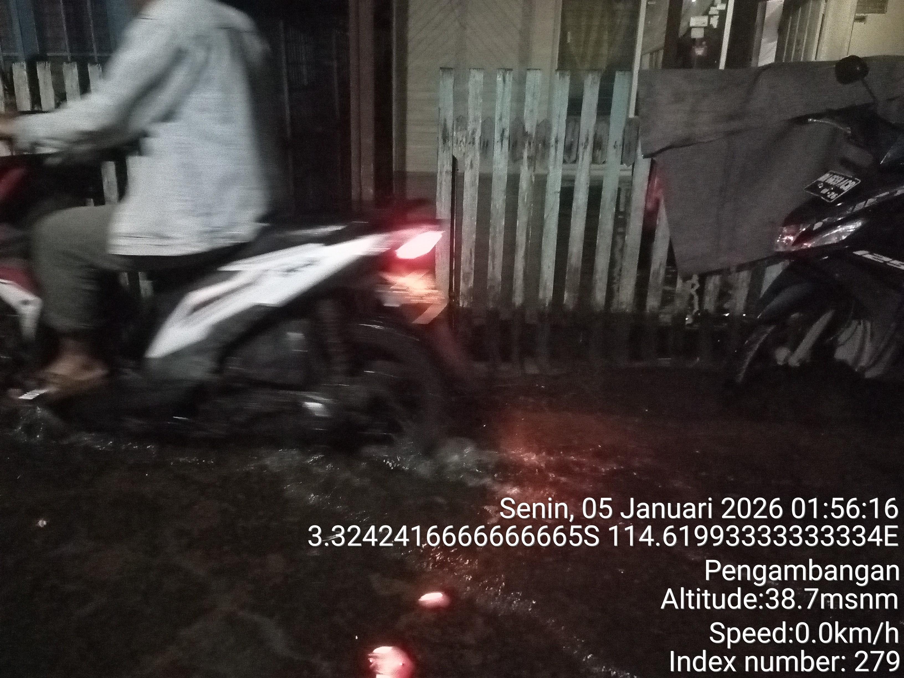

Senin, 5 Januari 2026 — Banjarmasin Timur
Kenaikan debit air kembali terpantau pada pukul 01.00 dini hari, dengan peningkatan mencapai 3 cm dalam waktu singkat. Kondisi ini membuat warga di sejumlah titik rawan banjir diminta untuk tetap waspada dan bersiap menghadapi kemungkinan kenaikan lebih lanjut.
Peningkatan debit air ini dipicu oleh hujan deras di bagian hulu, yang menyebabkan aliran air dari hulu ke hilir meningkat tajam. Volume air yang besar tidak tertampung oleh alur sungai yang mulai menyempit akibat sedimentasi dan berkurangnya daerah resapan, sehingga sungai meluap ke permukiman warga.
Beberapa kawasan dilaporkan mulai tergenang, meski masih dalam kategori ringan. Tim BPBD dan relawan telah bersiaga di lapangan untuk memantau kondisi dan memberikan bantuan jika diperlukan.
Pemerintah setempat mengimbau warga untuk:
Foto berikut diambil di kawasan Pengambangan pada Senin, 5 Januari 2026 pukul 01:56. Terlihat seorang pengendara motor melintasi genangan air malam hari, dengan kondisi jalan yang tergenang dan pencahayaan minim.
Pengendara motor melintasi banjir di Pengambangan, Banjarmasin Timur — 5 Januari 2026 pukul 01:56 (Foto: Dokumentasi warga)